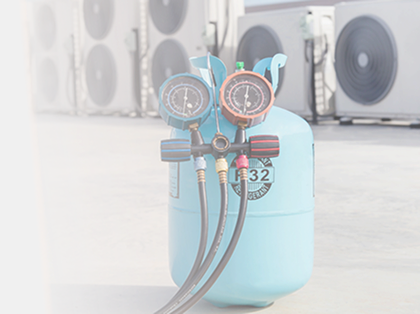
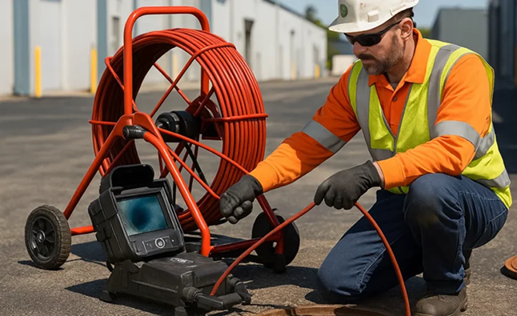
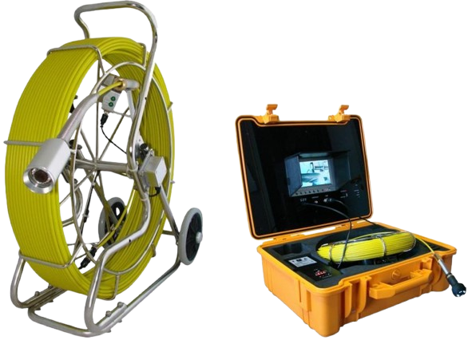
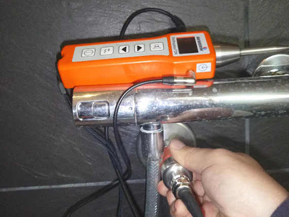
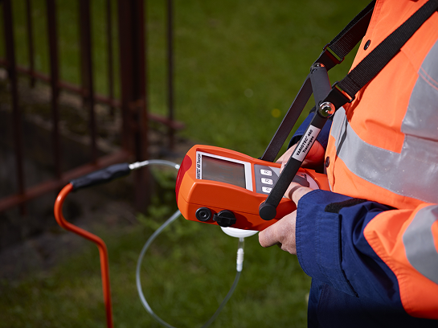
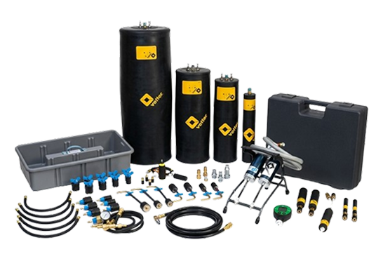

Technologies terrain sélectionnées pour leur précision, leur fiabilité et leur performance opérationnelle.
Solutions utilisées par des experts terrain – déployées à l'échelle de
l'océan Indien.

Inspection précise des réseaux, canalisations et structures techniques, même en zones difficiles d'accès.

Solutions adaptées aux réseaux étendus et environnements techniques complexes.

Localisation précise des fuites sur réseaux enterrés.

Solution avancée pour les fuites invisibles et complexes.

Équipements spécialisés pour la recherche de fuite sur réseaux hydrauliques et installations techniques.
